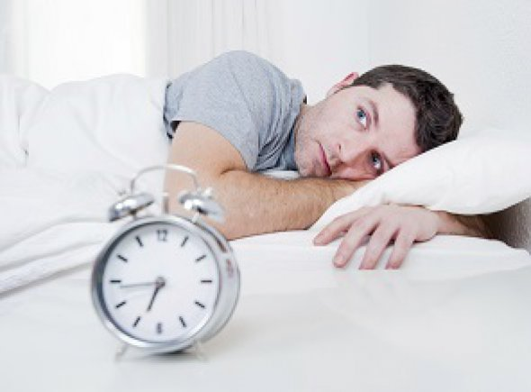

Healthy Sleep Is Good For Business

Freelancers take their employment and finances into their own hands. Many individuals go into freelance work to have more freedom and time to do other things besides work. Unfortunately, the reality of being a freelancer isn’t always the same as what we expect when slaving away at a 9 to 5 job. Freelancers can have more free time, but working without a safety net means you are regularly hustling to get a job, gig, or payday.
Freelancers are often times working whenever and wherever possible to make a living. As a freelancer myself, the days can be long with work continuing late into the night to get certain projects finished on time. Big projects with short turnarounds are common, but being a freelancer means taking these jobs on to make a living. It isn’t all work and no play as many days see workouts, taking my son to school and picking him up, and other activities taking place. It is something I would never have been able to do while working a 9 to 5 job.
One of the aspects of life that is hit and miss for a freelancer is sleep. Deadlines dictate just how much sleep a freelancer gets. There are nights when eight hours is sufficiently gained, while other nights can see far less. The majority of people do not get enough sleep anyway. According to a Fitbit study, users averaged just over six and a half hours of sleep a night. Interestingly, the study found that users went to sleep after 11:30 pm and were up before 7:30 am.
So, why is sleep important for freelancers and how can they achieve more time getting shut eye?
Business Improvement
Staying up all night to finish work, or even late into the wee hours, is a poor business practice that can damage your overall health. Your immune system can breakdown and cost you days of work due to recovering from illness.
If you have meetings with clients or need to stay up to date with customers the following day, you may not be at your best. Spending late nights working on one project may enable you to finish it, but it could cost you other clients down the line.
Work-life Balance
often find it difficult to get the work-life balance right as a freelancer. I have been in freelancer work for several years, but there are still some weeks I spread myself too thin. This causes issues with other clients and customers as I try to complete work as quickly as possible. Work can suffer and so can health when not getting enough sleep at night.
Individuals who become freelancers do so to get away from the grind of going to an office and working for someone else. However, when they spread themselves too thin and work around the clock, it is easy to forget why they become freelancers. Getting the right work-life balance is vital for a freelance worker especially when your office is at home.
Keep a Schedule
One of the most important things a freelancer can do, especially those of us who work at home, is to keep a schedule. Start work at a specific time, take breaks a set interval, and end the day at a designated time.
Freelancers are notorious for checking emails at all times and never fully shutting off. It is a downfall of the job as you never want to miss a payday. However, keeping a schedule not only gets you rested, it keeps you sane. A schedule can help you get the sleep you need at night time.
Get the Work Done ASAP
I often procrastinate some of the projects I take on. It is a curse of being sought out by clients as I take on too much from time to time. Due to procrastinating, deadlines for multiple projects build up. This build-up of projects can force freelancers to work on items late into the night to meet deadlines.
Freelancers should work on and complete projects as soon as possible and prevent procrastination. By completing the work as soon as possible, it enables individuals to keep their regular sleep routine. The more pressure on you due to an overload of work, the worse you will sleep. Stress causes poor sleep, so don’t take on too much work.
Help Yourself Sleep
Freelancers can struggle to turn themselves off after a day of work. There are ways to improve your sleep. A noise or natural sounds generator is a great way to create an ambience that promotes sleep. Stay away from caffeine late in the day and perhaps try drinking decaf coffee full-time.
Completing some form of exercise to finish the workday is a great way to tire out the body. Yoga is ideal to not only recharge your batteries, but rehabilitate your body after hunching over a computer at a desk for 10 hours.
Being a freelancer is hard work. It can take a much bigger toll on your body, health, and sleep than you think. You will probably never work as hard in your life as you will as a freelancer, and that is why getting enough sleep is vital to maintaining your business.